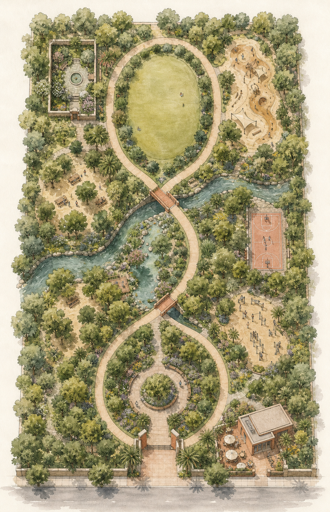

Al Safa 2 Park · Jumeirah · Dubai · 25.163543° N, 55.230825° E
The real competition site, and an 80-image render library covering every garden room from every angle — aerial, approach, walkthrough, flythrough, a three-stage growth evolution, and night — most with matching motion footage. Together they back deliverables №12, №13, №15 and №16.
Al Safa 2 Park sits in a low-rise villa neighborhood between Al Wasl Road and Sheikh Zayed Road. Zoom, drag, or jump straight to it in your maps app.
Site: Al Safa 2 Park, Jumeirah, Dubai · 25.163543, 55.230825 · ~15,000 m² neighborhood park (verify exact plot against the official as-built DWG)
Click a numbered room on the plan (or the list) to load its eight keyframes below.

AL SAFA PARK 2 · 15,000 M² · TRUE PARCEL PROPORTIONS 98 × 152 M (FROM OFFICIAL PLAN) · GRID-ALIGNED, N ROTATED ≈54°Eight keyframes per room: establishing aerial → approach → walkthrough → flythrough → evolution ×3 (opening day / year 2 / year 5, matched compositions for morph continuity) → night.
Furnishing-scale assets for every location — all dimensionally calibrated in real meters, viewable live below (drag to orbit) and downloadable for design development.